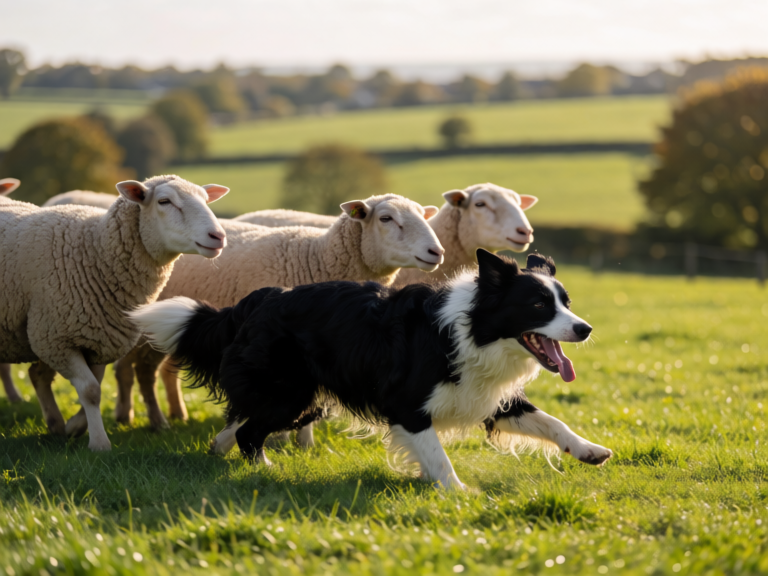
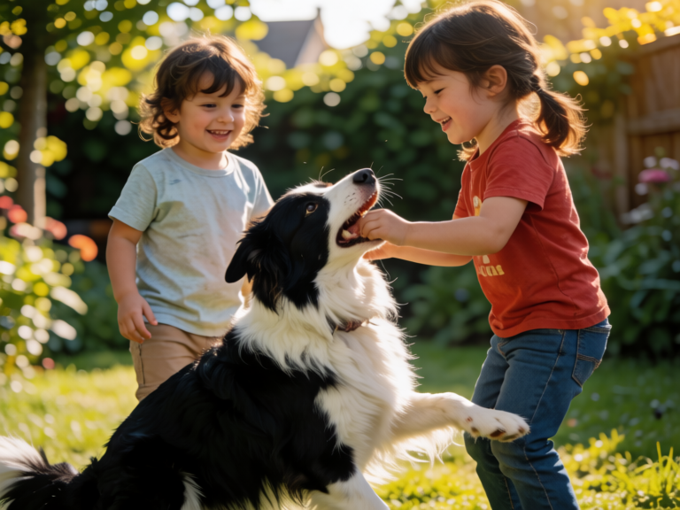
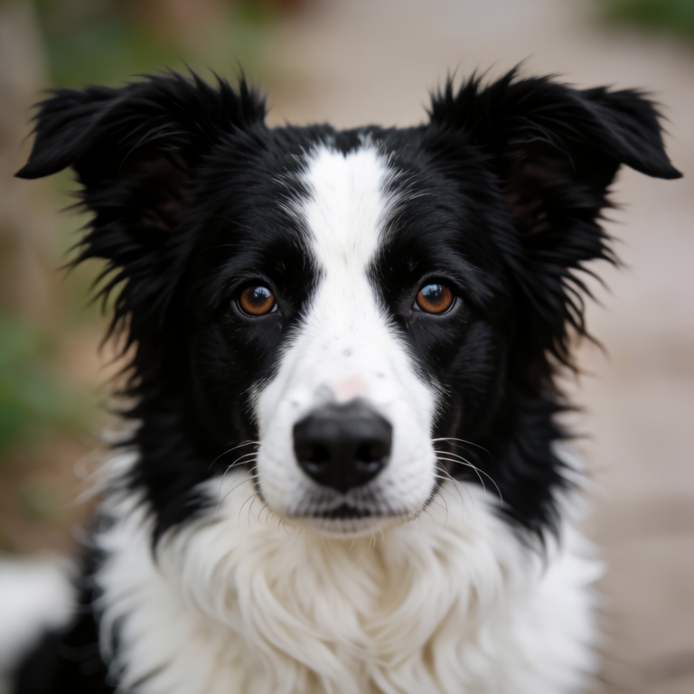

Die intelligenteste Hunderasse
Entdecken Sie die faszinierende Welt des Border Collies — eines der intelligentesten, energiegeladensten und treuesten Begleiter, die Sie sich vorstellen können.
Mehr erfahren ↓Eine Hunderasse, die seit über 200 Jahren in den schottisch-englischen Grenzregionen als Hirtehund arbeitet.
Der Border Collie entstand im 19. Jahrhundert in den Grenzregionen zwischen England und Schottland. Die Züchtung konzentrierte sich rein auf Arbeitsqualität — Aussehen war völlig nebensächlich. Der legendäre Hund "Old Hemp" um 1900 legte das genetische Fundament fast aller modernen Border Collies.
Heute ist der Border Collie weltweit als Sport-, Arbeits- und Familienhund beliebt — immer noch treu seinen Wurzeln als einer der fähigsten Hirtehunde der Welt.
Border Collies sind mittelgroße, athletische Hunde mit einer Körperlänge von 48–56 cm und einem Gewicht von 12–25 kg. Sie haben einen charakteristischen, tiefen "Blick" — die unverwechselbare starrende Haltung, mit der sie Schafe hüten.
Das Fell gibt es in kurzen und langen Varianten, in zahlreichen Farben: klassisch schwarz-weiß, aber auch rot-weiß, tricolor, blau-merle und viele mehr.
Als die intelligenteste Hunderasse der Welt können Border Collies bis zu 1.000 Wörter erkennen und verstehen. Sie lernen innerhalb weniger Wiederholungen und imitieren oft unbemerkt neue Verhaltensweisen.
Der ausgeprägte Herdentrieb ist das Markenzeichen der Rasse. Border Collies lieben es, Aufgaben zu haben — ob Schäferhund-Arbeit, Sport oder tägliche Herausforderungen zu Hause.
Border Collies sind eng an ihren Menschen gebunden. Sie suchen ständigen Kontakt und wollen nicht lange allein gelassen werden. Diese Loyalität macht sie zu wunderbaren Begleitern.
Was Border Collies von anderen Hunderassen fundamental unterscheidet.
Border Collies sind neugierig, sensibel und extrem lernbegierig. Sie beobachten ihre Umgebung intensiv und versuchen ständig, Zusammenhänge zu verstehen. Ein Border Collie, der langeweilt, erfindet sich selbst Beschäftigung — oft zum Leidwesen seiner Möbel.
Sie sind sanft und freundlich, zeigen aber eine bemerkenswerte Eigeninitiative. Viele Halter berichten, dass ihr Border Collie sie bei täglichen Routinen „hilft" — ohne dass sie darum gebeten wurden.
Das Wort „aktiv" ist eine Untertreibung. Border Collies brauchen täglich mehrere Stunden intensive Bewegung — sowohl körperlich als auch geistig. Ein Spaziergang genügt nicht. Ideal sind Aktivitäten wie Agility, Flyball, Hütesport, Discdog oder lange Joggingeinheiten.
Ohne ausreichende Auslastung neigen sie zu zerstörerischem Verhalten, übermäßigem Bellen oder neurotischen Gewohnheiten.
Der Border Collie bedarf keiner übermäßigen Pflege — dafür lebt er sein ganzes Leben lang intensiv.
Das dichte Fell benötigt mindestens einmal wöchentliches Bürsten. Während des Fellwechsels im Frühjahr und Herbst sollte täglich gebürstet werden, um Haarballen und Mattes zu vermeiden. Kurzhhaarige Varianten sind deutlich pflegeleichter.
Als aktiver Hund mit hohem Energieverbrauch benötigen Border Collies qualitativ hochwertiges Futter mit ausreichend Protein (mindestens 25 %). Die tägliche Ration hängt vom Aktivitätsレベル ab — sportliche Hunde brauchen oft 30-50 % mehr als eher ruhig gehaltene Artgenossen.
Regelmäßige Tierarzt-Checks sind wichtig. Achten Sie besonders auf Hüft- und Ellbogendysplasie, Augenerkrankungen (Progressive Retina-Atrophie, Collie-Eye-Anomalie) und Epileptische Anfallssyndrom. Züchter sollten genetisch getestet sein.
Nagelkürzung alle 4–6 Wochen, Zahnpflege 2-3× pro Woche und Ohrkontrollen sind Standard. Baden Sie Ihren Border Collie nur bei Bedarf — zu häufiges Waschen entfernt die natürlichen Fette des Fells. Viele Border Collies schwimmen gerne — das ist gleichzeitig eine tolle Beschäftigung.
Ohne geistige und körperliche Herausforderung entfalten Border Collies nie ihr volles Potenzial.
Agility ist das Parade-Fach des Border Collies. Stangen, Tunnel, Slalom und Sprünge werden von diesen Hunden oft als Spiel empfunden. Viele Border Collies gewinnen internationale Wettkämpfe — aber schon das tägliche Training im Garten ist eine perfekte Auslastung.
Aber auch Flyball, Discdog, Mantrailing oder Nasenarbeit sind hervorragende Beschäftigungen, die den Hund mental und körperlich fordern.
Der Herdentrieb kann kanalisiert werden durch Hütesport. Selbst in der Stadt lassen sich spezielle Hüteworkshops oder Herden-Simulationen finden. Das ist die ursprüngliche Aufgabe — und kein anderes Spiel ersetzt sie ganz.
Manchmal reicht es bereits, dem Hund eine „Hirtenweste" mit einem kleinen Ziegen- oder Schafschaufell aus Schaumstoff zu geben, um das Verhalten zu kanalisieren.
Puzzle-Spielzeuge, Nasen-Arbeit, Suchspiele und interaktive Rätsel halten den Verstand fit. Ein Border Collie sollte täglich Zeit mit „Denken" verbringen.
Minimum 2 Stunden Bewegung täglich: Joggen, Radfahren, Schwimmen, Spielen im Park. Mehr ist nie zu viel.
Border Collies lernen neue Tricks in Rekordzeit. Machen Sie das Training zum tägliche Ritual — der Hund freut sich darauf mehr als auf alles andere.
Border Collies sind generell robuste Hunde — es gibt aber einige rasstypische Gesundheitsrisiken.
Collie-Eye-Anomalie (CEA): Genetisch bedingt, bei 30-40 % der Rasse. Meist mild, seltener schwer.
Progressive Retina-Atrophie (PRA): Führt im fortgeschrittenen Alter zu Erblindung. Genetisches Screening empfohlen.
Hüftdysplasie: Tritt bei ca. 10-15 % auf, oft erst ab 2. Lebensjahr symptomatisch. Regelmäßige Röntgen-Checks bei der Zucht.
Ellbogendysplasie: Besonders bei langhaarigen Varianten relevant.
Epilepsie: Border Collies haben eine leicht erhöhte Anfälligkeit. Erste Anfälle meist zwischen 6 Monaten und 3 Jahren.
Bark-Hurries: Ein seltendes, genetisches Anfallssyndrom bei merle-Hunden.
Mit einer angemessenen Ernährung und Bewegung leben Border Collies durchschnittlich 12–15 Jahre, manche sogar bis 17+. Sportliche Hunde mit gutem Gewichtigt zeigen oft eine bessere Lebensqualität als übergewichtige Artgenossen.
Border Collies in Aktion — beim Arbeiten, Spielen und als treuer Begleiter.



Vergleichen Sie den Border Collie mit anderen Hunderassen
Beantworten Sie einige Fragen, um herauszufinden, ob ein Border Collie der richtige Hund für Sie ist
Berechnen Sie die optimalen Trainingszeiten und Kalorienbedarf Ihres Border Collies
Der Border Collie ist kein Hund für jeden — aber für die richtige Person ist er der beste Begleiter der Welt. Er braucht Bewegung, mentale Herausforderung und eine tiefe Bindung. Wenn Sie das bieten können, wird er ein Leben lang mit Treue und Liebe antworten.